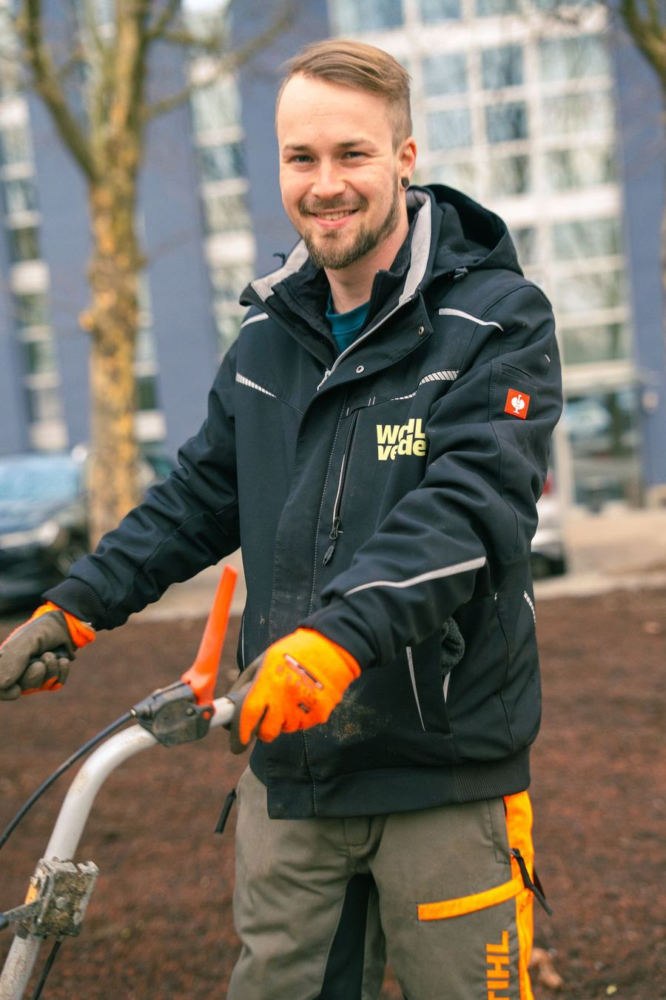

Gebäudereinigung & Grünpflege in Bretten
Auch in Bretten und im angrenzenden Kraichgau sind wir für Gewerbe, Hausverwaltungen und Kommunen im Einsatz. Grünpflege, Gebäudereinigung, Hausmeisterservice und Winterdienst bekommen Sie bei uns aus einer Hand.

Kurz gesagt: WOHLverde betreut Objekte in Bretten mit eigenem, festangestelltem Team. Grünpflege, Gebäudereinigung, Hausmeisterservice und Winterdienst kommen aus einer Hand, mit festen Ansprechpartnern und dokumentierten Abläufen. Bretten betreuen wir regelmäßig von Forst aus.
Alles, was Ihr Objekt braucht.
Für Objekte in Bretten planen wir feste Touren und feste Teams. So bleibt die Qualität gleich, und Sie wissen immer, wer bei Ihnen arbeitet.
Regional, verlässlich, ohne Umwege.
Regional und schnell vor Ort
Kurze Wege, feste Ansprechpartner und schnelle Reaktionszeiten im Raum Bruchsal und Karlsruhe.
Festes Team, volle Qualitätskontrolle
Ausschließlich festangestellte, deutschsprachige Mitarbeitende. Keine Subunternehmen, kein Wechselpersonal.
Ganzheitliche Objektbetreuung
Grünpflege, Gebäudereinigung und technischer Objektservice greifen ineinander. Ein Partner, ein Ansprechpartner.
Planbare Qualität im laufenden Betrieb
Strukturiert, termintreu und dokumentiert. Leistungen sind klar definiert und dauerhaft nachvollziehbar.
Bietet WOHLverde Gebäudereinigung und Grünpflege in Bretten an?
Ja. Bretten gehört zu unserem Einsatzgebiet. Wir übernehmen dort Grünpflege, Gebäudereinigung, Hausmeisterservice und Winterdienst, einzeln oder als Gesamtpaket aus einer Hand.
Wie schnell ist WOHLverde in Bretten vor Ort?
Bretten betreuen wir im Rahmen fester Touren. Reaktionszeiten für dringende Fälle vereinbaren wir individuell mit Ihnen.
Für welche Objekte in Bretten ist WOHLverde der richtige Partner?
Für Bürogebäude, Gewerbe- und Industrieflächen, Wohnanlagen von Hausverwaltungen sowie kommunale Einrichtungen. Auf Anfrage betreuen wir auch Privatkunden.
Was kostet die Objektbetreuung in Bretten?
Jedes Objekt ist anders. Nach einem Vor-Ort-Termin erhalten Sie ein transparent kalkuliertes Angebot mit klar definierten Leistungen. Der Termin ist für Sie unverbindlich.
Objekt in Bretten? Wir schauen es uns an.
Schreiben Sie uns kurz, worum es geht. Wir melden uns in der Regel innerhalb eines Werktags und vereinbaren einen unverbindlichen Vor-Ort-Termin.
5,0über 60 Google-Rezensionen- Telefon07251 3924446
- E-Mailinfo@wohlverde.de
- StandortKronauer Allee 1, 76694 Forst
- ErreichbarkeitMo bis Fr 8 bis 17 Uhr, Sa nach Vereinbarung
Mo bis Fr 8 bis 17 Uhr erreichbar